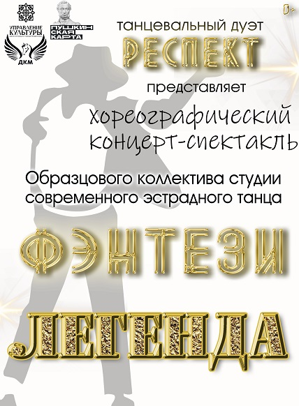

📅 11 июня 2026(чт) 18:30
ЛЕГЕНДА - это НАША история, традиции. А точнее всего мира. Что есть Легенда и как к ней относиться — над этим вопросом размышляли многие исследователи. В наше время нередко бытует мнение, что Легенды — это выдумка народа, мечтавшего о чём-то прекрасном и несбыточном, то есть сказка и не более того. Вероятно, поводом к этому является то, что в Легендах часто показаны невероятные, волшебные события, а герои совершают действия, невозможные с точки зрения современного человека... Мы же попытаемся посмотреть на Легенды, как на древнюю историю, — пусть и приукрашенную, но имеющую правдивое основание. Это и поможет нам убедиться, что их герои — реально существовавшие люди разных эпох, совершавшие подвиги и запечатлённые в исторических документах — в летописях и воспоминаниях современников. Интересно, а может ли каждый из нас стать той самой Легендой?